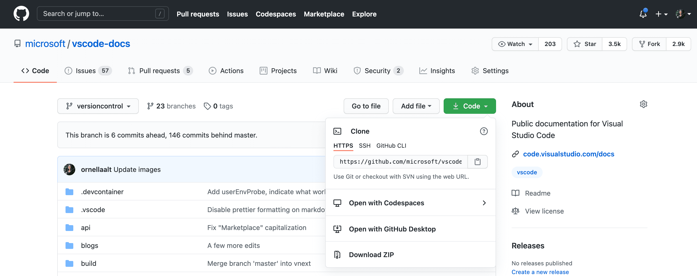

Using Git source control in VS Code
Visual Studio Code has integrated source control management (SCM) and includes Git support out-of-the-box. Many other source control providers are available through extensions on the VS Code Marketplace.
Working in a Git repository
Just getting started with Git? The git-scm website is a good place to start, with a popular online book, Getting Started videos and cheat sheets. The VS Code documentation assumes you are already familiar with Git.

Make sure Git is installed. VS Code will use your machine's Git installation (at least version
2.0.0), so you need to install Git first before you get these features.
The Source Control icon in the Activity Bar on the left will always indicate an overview of how many changes you currently have in your repository. Selecting the icon will show you the details of your current repository changes: CHANGES, STAGED CHANGES and MERGE CHANGES.
Clicking each item will show you in detail the textual changes within each file. Note that for unstaged changes, the editor on the right still lets you edit the file: feel free to use it!
You can also find indicators of the status of your repository in the bottom-left corner of VS Code: the current branch, dirty indicators, and the number of incoming and outgoing commits of the current branch. You can checkout any branch in your repository by clicking that status indicator and selecting the Git reference from the list.
Tip: You can open VS Code in a sub-directory of a Git repository. VS Code's Git services will still work as usual, showing all changes within the repository, but file changes outside of the scoped directory are shaded with a tool tip indicating they are located outside the current workspace.
Commit
Staging (git add) and unstaging (git reset) can be done via contextual actions in the files or by drag-and-drop.
Configure your Git username and email. When you commit, be aware that if your username and/or email is not set in your Git configuration, Git will fall back to using information from your local machine. You can find the details in Git commit information.

You can type a commit message above the changes and press Ctrl+Enter (macOS: +Enter) to commit them. If there are any staged changes, only those changes will be committed. Otherwise, you'll get a prompt asking you to select what changes you'd like to commit and get the option to change your commit settings.
We've found this to be a great workflow. For example, in the earlier screenshot, only the staged changes to overview.png will be included in the commit. Later staging and commit actions could include the changes to versioncontrol.md and the two other .png images as a separate commit.
More specific Commit actions can be found in the Views and More Actions ... menu on the top of the Source Control view.

Tip: If you commit your change to the wrong branch, undo your commit using the Git: Undo Last Commit command in the Command Palette (P (Windows, Linux Ctrl+Shift+P)).
Cloning a repository
If you haven't opened a folder yet, the Source Control view will give you the options to Open Folder from your local machine or Clone Repository.

If you select Clone Repository, you will be asked for the URL of the remote repository (for example on GitHub) and the parent directory under which to put the local repository.
For a GitHub repository, you would find the URL from the GitHub Code dialog.

You would then paste that URL into the Git: Clone prompt.

You'll also see the option to Clone from GitHub. Once you authenticate with your GitHub account in VS Code, you'll be able to search through repositories by name, and select any repo to clone it. You can also start the flow to clone a Git repository with the Git: Clone command in the Command Palette (P (Windows, Linux Ctrl+Shift+P)). To see a step-by-step walkthrough, check out our Clone repos from VS Code video.
Note: If you'd like to work on a repository without cloning the contents to your local machine, you can install the GitHub Repositories extension to browse and edit directly on GitHub. You can learn more in the GitHub Repositories extension section.
Branches and Tags
You can create and checkout branches directly within VS code through the Git: Create Branch and Git: Checkout to commands in the Command Palette (P (Windows, Linux Ctrl+Shift+P)).
If you run Git: Checkout to, you will see a dropdown list containing all of the branches or tags in the current repository. It will also give you the option to create a new branch if you decide that's a better option, or checkout a branch in detached mode.

The Git: Create Branch command lets you quickly create a new branch. Just provide the name of your new branch and VS Code will create the branch and switch to it. If you choose to Create new branch from..., you'll get an extra prompt that allows you to specify which commit the new branch should be pointing to.
Remotes
Given that your repository is connected to some remote and that your checked out branch has an upstream link to a branch in that remote, VS Code offers you useful actions to push, pull, and sync that branch (the latter will run a pull command followed by a push command). You can find these actions in the Views and More Actions ... menu, along with the option to add or remove a remote.
VS Code is able to periodically fetch changes from your remotes. This enables VS Code to show how many changes your local repository is ahead or behind the remote. This feature is disabled by default and you can use the git.autofetch setting to enable it.
Tip: You should set up a credential helper to avoid getting asked for credentials every time VS Code talks to your Git remotes. If you don't do this, you may want to consider disabling automatic fetching via the
git.autofetchsetting to reduce the number of prompts you get.
Git Status Bar actions
There is a Synchronize Changes action in the Status Bar, next to the branch indicator, when the current checked out branch has an upstream branch configured. Synchronize Changes will pull remote changes down to your local repository and then push local commits to the upstream branch.

If there is no upstream branch configured and the Git repository has remotes set up, the Publish action is enabled. This will let you publish the current branch to a remote.

Gutter indicators
If you open a folder that is a Git repository and begin making changes, VS Code will add useful annotations to the gutter and to the overview ruler.
- A red triangle indicates where lines have been deleted
- A green bar indicates new added lines
- A blue bar indicates modified lines

Merge conflicts
Merge conflicts are recognized by VS Code. Differences are highlighted and there are inline actions to accept either one or both changes. Once the conflicts are resolved, stage the conflicting file so you can commit those changes.
Viewing diffs
Our Git tooling supports viewing of diffs within VS Code.

Tip: You can diff any two files by first right clicking on a file in the Explorer or OPEN EDITORS list and selecting Select for Compare and then right-click on the second file to compare with and select Compare with 'file_name_you_chose'. Alternatively from the keyboard hit P (Windows, Linux Ctrl+Shift+P) and select File: Compare Active File With and you will be presented with a list of recent files.
Diff editor review pane
There is a review pane in the Diff editor that presents changes in a unified patch format. You can navigate between changes with Go to Next Difference (F7) and Go to Previous Difference (F7 (Windows, Linux Shift+F7)). Lines can be navigated with arrow keys and pressing Enter will jump back in the Diff editor and the selected line.

Note: This experience is especially helpful for screen reader users.
Timeline view
The Timeline view, accessible at the bottom of the File Explorer by default, is a unified view for visualizing time-series events (for example, Git commits) for a file.

VS Code's built-in Git support provides the Git commit history of the specified file. Selecting a commit will open a diff view of the changes introduced by that commit. When you right-click on a commit, you'll get options to Copy Commit ID and Copy Commit Message.
Visual Studio Code supports more Git history workflows through extensions available on the VS Code Marketplace.
Tip: Click on an extension tile to read the description and reviews in the Marketplace.
Git output window
You can always peek under the hood to see the Git commands we are using. This is helpful if something strange is happening or if you are just curious. :)
To open the Git output window, run View > Output and select Log (Git) from the dropdown list.
Initialize a repository
If your workspace is on your local machine, you can enable Git source control by creating a Git repository with the Initialize Repository command. When VS Code doesn't detect an existing Git repository, the Source Control view will give you the options to Initialize Repository or Publish to GitHub.

You can also run the Git: Initialize Repository and Publish to GitHub commands from the Command Palette (P (Windows, Linux Ctrl+Shift+P)). Running Initialize Repository will create the necessary Git repository metadata files and show your workspace files as untracked changes ready to be staged. Publish to GitHub will directly publish your workspace folder to a GitHub repository, allowing you to choose between private and public repositories. Check out our publishing repos video for more information about publishing to GitHub.
VS Code as Git editor
When you launch VS Code from the command line, you can pass the --wait argument to make the launch command wait until you have closed the new VS Code instance. This can be useful when you configure VS Code as your Git external editor so Git will wait until you close the launched VS Code instance.
Here are the steps to do so:
- Make sure you can run
code --helpfrom the command line and you get help.- if you do not see help, please follow these steps:
- macOS: Select Shell Command: Install 'Code' command in path from the Command Palette.
- Windows: Make sure you selected Add to PATH during the installation.
- Linux: Make sure you installed Code via our new
.debor.rpmpackages.
- if you do not see help, please follow these steps:
- From the command line, run
git config --global core.editor "code --wait"
Now you can run git config --global -e and use VS Code as editor for configuring Git.
VS Code as Git difftool and mergetool
You can use VS Code's diff and merge capabilities even when using Git from command-line. Add the following to your Git configurations to use VS Code as the diff and merge tool:
[diff]
tool = default-difftool
[difftool "default-difftool"]
cmd = code --wait --diff $LOCAL $REMOTE
[merge]
tool = code
[mergetool "code"]
cmd = code --wait --merge $REMOTE $LOCAL $BASE $MERGED
This uses the --diff option that can be passed to VS Code to compare two files side by side. The merge tool will be used the next time Git discovers a merge conflict.
To summarize, here are some examples of where you can use VS Code as the editor:
git rebase HEAD~3 -ido interactive rebase using VS Codegit commituse VS Code for the commit messagegit add -pfollowed by e for interactive addgit difftool <commit>^ <commit>use VS Code as the diff editor for changes
Working with GitHub Pull Requests and Issues
Visual Studio Code can also bring in GitHub's pull requests and issues. Create your PRs in VS Code, review with comments, and approve them without switching context. Learn more about GitHub PRs and Issues in VS Code.
SCM Providers
Tip: Click on an extension tile to read the description and reviews in the Marketplace.
VS Code has support for handling multiple Source Control providers simultaneously. For example, you can open multiple Git repositories alongside your Azure DevOps Server local workspace and seamlessly work across your projects. To turn on the Source Control Providers view, select the overflow menu in the Source Control view (G (Windows, Linux Ctrl+Shift+G)), hover over Views, and make sure that Source Control Repositories is marked with a check. The Source Control Providers view shows the detected providers and repositories, and you can scope the display of your changes by selecting a specific provider.

SCM Provider extensions
If you would like to install another SCM provider, you can search on the scm providers extension category in the Extensions view (X (Windows, Linux Ctrl+Shift+X)). Start typing '@ca' and you will see suggestions for extension categories like debuggers and linters. Select @category:"scm providers" to see available SCM providers.

Next steps
- Intro Video - Git Version Control - An introductory video providing an overview of VS Code Git support.
- Basic Editing - Learn about the powerful VS Code editor.
- Code Navigation - Move quickly through your source code.
- Debugging - This is where VS Code really shines
- Tasks - Running tasks with Gulp, Grunt, and Jake. Showing Errors and Warnings
- Source Control API - If you want to integrate another Source Control provider into VS Code, see our Source Control API.